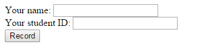
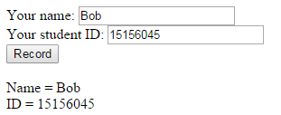
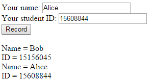

http://ihome.ust.hk/~username/cgi-bin/test.cgiAlways check your CGI program in command line before uploading it to the web server. You may use the following command to check for syntax errors:
perl -wc DataRecord.cgi
For the actual execution of the CGI program, you may use the following command:
perl -w DataRecord.cgi > output.html
The execution will return a html file (output.html). To supply
parameters to the CGI program, first you need to add a debug option to the CGI
library,
use CGI qw(:standard -debug);
While execution, Perl would request you to input parameters and terminate with control-D,
$ perl -w DataRecord.cgi >
output.html
Use of uninitialized value in split at DataRecord.cgi line 7.
(offline mode: enter name=value pairs on standard input; press ^D or ^Z when
done)
order=Name
Your task for this lab is to develop a CGI program called DataRecord.cgi which can record all the input data of students' information (name and ID).
Initial:

Record information of one student:

Record information of two students:

A sample CGI program can be viewed in here.
Please submit you DataRecord.cgi using CASS on or before 10:00pm, 02-May-2015. You should check make sure your program will run on the iHome server
environment. Add a comment line near the top of DataRecord.cgi to show your script address on ihome.ust.hk.
Any inquiry please contact your TAs by email (shuaa@cse.ust.hk).